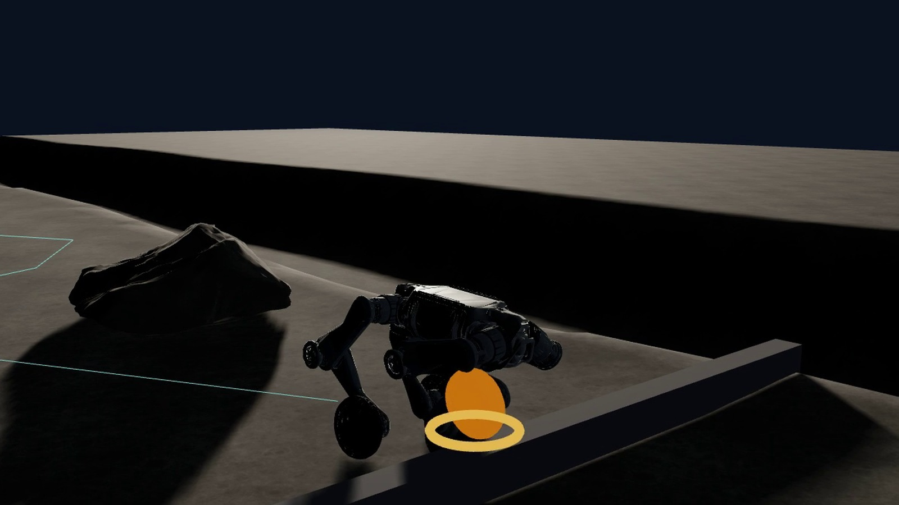

空间前额叶 × 山猫 M20
先想，再走，
亲手迈过下一步。
从受限第一眼到局部空间想象，在模型里试路，再让 M20 穿过高石、跨过矮坎。
观测 → 局部想象 → 预测 → 探索你来驾驶 →
同一任务 / 三种判断
让判断接受结果检验。
选择研究场景，比较观察次数、仿真用时与原运行结果。
| 策略 | 观察 | 仿真时钟 | 结果 |
|---|

空间前额叶 × 山猫 M20
从受限第一眼到局部空间想象，在模型里试路，再让 M20 穿过高石、跨过矮坎。
同一任务 / 三种判断
选择研究场景，比较观察次数、仿真用时与原运行结果。
| 策略 | 观察 | 仿真时钟 | 结果 |
|---|
